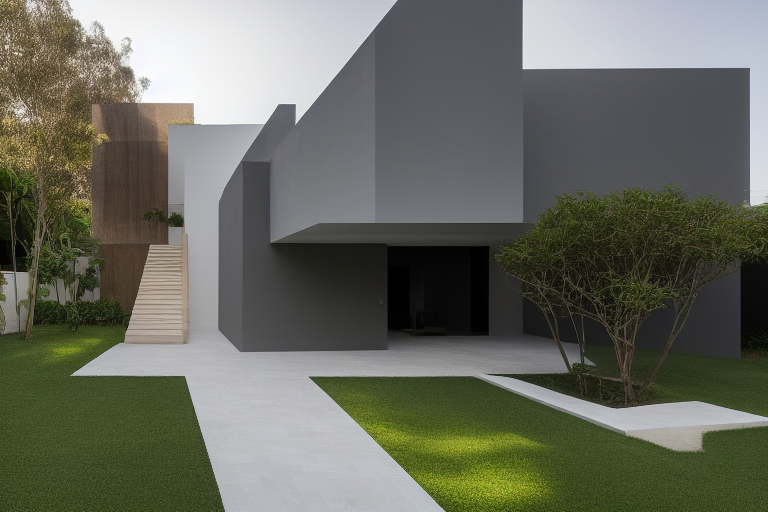

Pátio Norte
Casa térrea · luz filtrada · materialidade essencial
Arquitetura residencial + interiores · Campo Grande/MS
Uma proposta de presença digital
Uma direção editorial para apresentar casas, interiores e decisões de projeto com pausa, clareza e intenção.
Preview com conteúdo e imagens exploratórios. Posicionamento, serviços, região e identidade dependem de validação.

A casa não precisa falar alto para ser lembrada.
Esta proposta parte de um princípio simples: cada projeto pode ser visto como uma sequência de escolhas — e não apenas como uma coleção de imagens.
O desenho abaixo é uma hipótese visual para um escritório de arquitetura residencial e interiores. Não descreve portfólio, experiência ou método reais.
Imagens geradas para testar ritmo, recorte e narrativa. Nenhuma representa obra executada.
Casa térrea · luz filtrada · materialidade essencial
Estar e jantar · textura · continuidade
Refúgio urbano · sombra · transição
Este filtro está reservado para futuros estudos. Volte a “Todos” para continuar explorando.
Categorias hipotéticas. Não são lista de serviços confirmada.
Da leitura do terreno ao desenho das relações entre luz, circulação e permanência.
Ambientes pensados por camadas: escala, matéria, uso e o que permanece fora do enquadramento.
Uma estrutura de conversa para transformar referências soltas em decisões compartilhadas.
Uma hipótese de processo em quatro movimentos, apresentada sem prometer prazos ou resultados.
Entender rotina, desejos, limites e o que precisa mudar.
Organizar prioridades, referências e perguntas em um norte possível.
Dar forma às escolhas e testar relações antes de fixar respostas.
Amarrar matéria, medida e uso para que a ideia continue legível.
Formulário demonstrativo para testar a jornada de briefing. Nenhum dado será enviado ou armazenado.